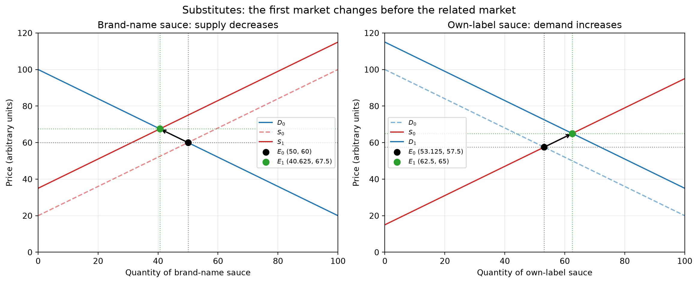
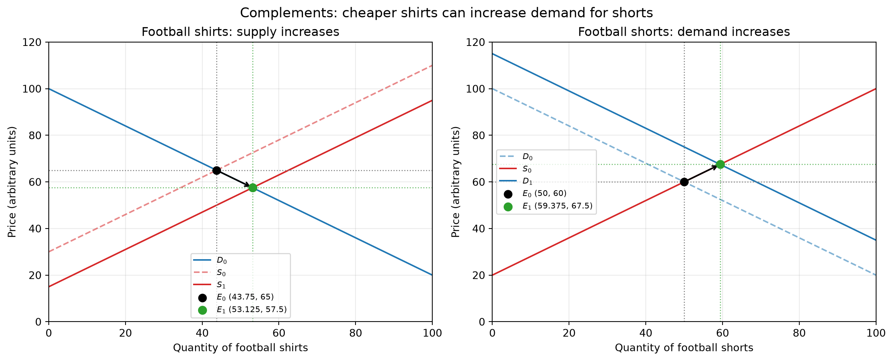
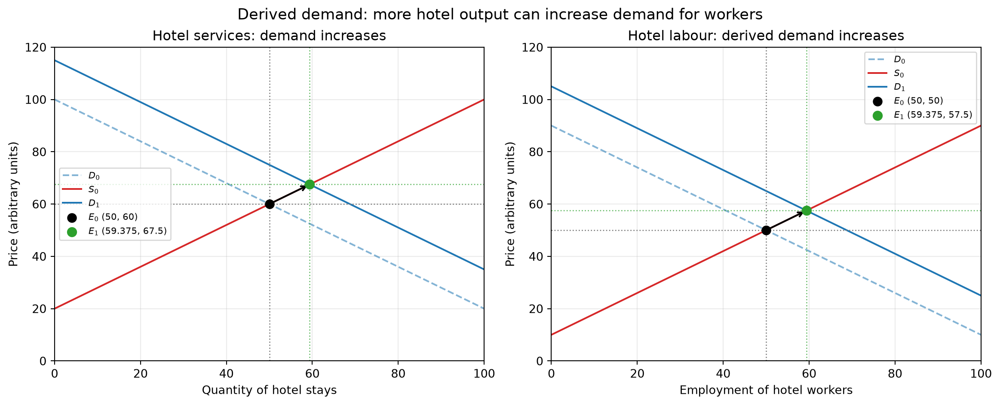
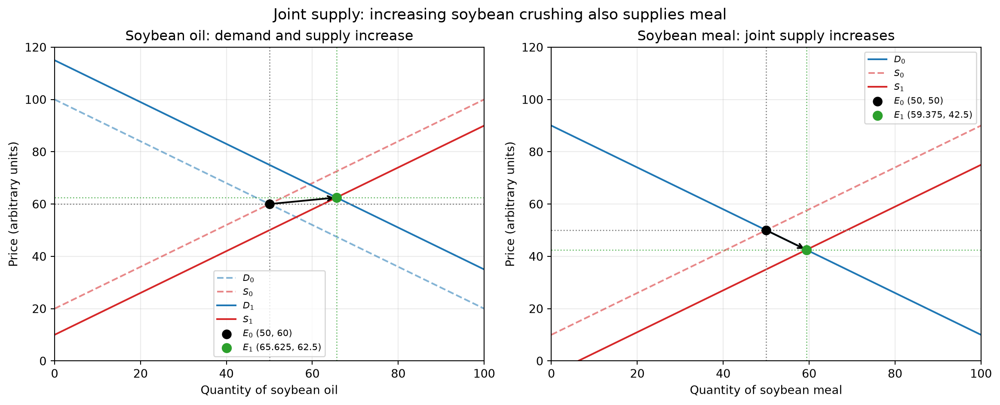

Demand and Supply - Relationships Between Markets
This lesson reviews market equilibrium and disequilibrium, applies supply and demand to case studies, explains relationships between markets, and considers the role of prices in allocating resources.
1. Reading Graphs and Understanding Disequilibrium
- Market equilibrium: In the basic model, equilibrium is where planned quantity supplied equals planned quantity demanded: \(Q_s = Q_d\). This is a point of balance in the model; it does not mean that real markets are static or that they always converge to equilibrium.
- Excess supply (surplus):
- At a price above equilibrium: At price \(P_1 > P\), quantity supplied is \(Q_2\) and quantity demanded is \(Q_1\). The surplus is \(Q_2 - Q_1\).
- Possible adjustment: If prices can adjust, unsold stocks may put downward pressure on price. As price falls from \(P_1\) toward \(P\), quantity demanded rises along the demand curve (\(Q_1 \to Q\)) and quantity supplied falls along the supply curve (\(Q_2 \to Q\)).
- Excess demand (shortage):
- At a price below equilibrium: At price \(P_1' < P\), quantity demanded is \(Q_1\) and quantity supplied is \(Q_2\). The shortage is \(Q_1 - Q_2\).
- Possible adjustment: If prices can adjust, competition among buyers or stockouts may put upward pressure on price. As price rises from \(P_1'\) toward \(P\), quantity supplied rises (\(Q_2 \to Q\)) and quantity demanded falls (\(Q_1 \to Q\)).
- Graph literacy: A change in a good’s own price causes movement along its demand or supply curve, assuming other factors are unchanged. Changes in non-price determinants shift the curves.
2. Kenya Passion Fruit and Cut Flowers Case Study
The class discussed case-study figures about Kenyan agricultural exports. Treat the following elasticity calculation as an estimate based on those figures, not as proof that price alone caused the export change.
Cut flowers: The case reports that flower exports to the UK rose by 2% while the traded price rose by 10% in 2017. The simple percentage-change estimate is:
\[\text{Estimated PES} = \frac{2\%}{10\%} = 0.2\]
If the export-volume change is a suitable measure of quantity supplied and other influences are held constant, this estimate suggests relatively price-inelastic supply over that period. A single pair of observed changes cannot establish that price caused the quantity change: weather, capacity, exchange rates, and other factors may also have mattered.
Passion fruit shortages: Higher prices can encourage producers to expand supply or switch land from other crops, but how much and how quickly depends on growing cycles, available land, costs, and other constraints. Buyers may also switch to substitutes, depending on their needs and the availability of alternatives.
3. Shifts and Movements Along Curves
- Movement along a curve: A change in the good’s own price changes quantity demanded or quantity supplied along the existing curve, ceteris paribus.
- Curve shift: A change in another determinant changes demand or supply at each price. Examples include income, tastes, prices of substitutes or complements, input costs, technology, subsidies, and taxes.
4. Relationships Between Markets
The graphs show illustrative linear curves, not observed market data. In each panel, \(D_0\) and \(S_0\) are the initial curves, \(D_1\) or \(S_1\) is the shifted curve, and \(E_0\) and \(E_1\) mark the initial and new equilibria. Prices and quantities are shown in arbitrary units. Read each pair from left to right: first identify the initial market change, then trace its effect into the related market. The stated equilibrium effects assume the other curve in that market stays fixed.
- Substitute goods: brand-name and own-label sweet chilli sauce
- Suppose a rise in production costs reduces the brand-name sauce’s supply. Its supply curve shifts left from \(S_0\) to \(S_1\); with demand unchanged, equilibrium moves from \(E_0\) to \(E_1\): price rises and quantity falls.
- The higher relative price makes the own-label sauce more attractive to some buyers. Its demand shifts right from \(D_0\) to \(D_1\).
- If own-label supply is unchanged, its new equilibrium has both a higher price and a higher quantity.
- A price increase by itself does not establish that supply fell; the graph’s first shift here is caused by the assumed increase in costs.
- Complementary goods: football shirts and shorts
- Suppose production costs fall or production capacity improves for football shirts. Shirt supply shifts right from \(S_0\) to \(S_1\).
- With shirt demand unchanged, the shirt price falls and the quantity sold rises.
- If buyers commonly use shirts and shorts together, the lower shirt price can increase demand for shorts. Shorts demand shifts right from \(D_0\) to \(D_1\).
- If shorts supply is unchanged, the shorts equilibrium price and quantity both rise. This is a demand shift in the shorts market, not a movement along its original demand curve.

- Derived demand: hotel stays and hotel workers
- Suppose more visitors want hotel stays. Demand for hotel services shifts right from \(D_0\) to \(D_1\).
- If hotel supply slopes upward, the new equilibrium has a higher room price and more stays.
- Providing additional hotel stays requires labour. If hotels need more workers and other determinants are unchanged, derived demand for hotel labour shifts right from \(D_0\) to \(D_1\).
- With an upward-sloping labour supply curve, the new labour-market equilibrium has a higher wage and employment. The size of both changes depends on how readily hotels can expand and how responsive labour supply is.

- Joint supply: soybean oil and soybean meal
- Soybean oil and soybean meal are joint products of crushing soybeans. Suppose demand for soybean oil increases from \(D_0\) to \(D_1\).
- If the higher oil price makes it profitable and feasible to crush more soybeans, oil supply also expands from \(S_0\) to \(S_1\). Oil-market quantity rises; its new price depends on the relative sizes of the demand and supply shifts. The graph illustrates one possible outcome, not a general prediction about price.
- More crushing produces more soybean meal as a by-product, shifting meal supply right from \(S_0\) to \(S_1\).
- If meal demand is unchanged, the greater meal supply lowers its equilibrium price and raises the quantity sold. This result depends on the production link and on processors being able to increase crushing.

5. Functions of Price in Resource Allocation
- Rationing: When a good is scarce and prices can adjust, a higher price tends to reduce quantity demanded and allocates the available good among people willing and able to pay. This does not necessarily mean it goes to those with the greatest need or social value.
- Signalling: Price changes communicate information about relative scarcity and changes in demand or supply. They are signals, but do not convey every relevant piece of information.
- Incentives: A higher market price can encourage firms to supply more and can encourage buyers to conserve or seek alternatives. The response depends on costs, capacity, and how responsive buyers and sellers are to price.
6. Homework and Unit Roadmap
- Homework:
- Practise drawing and explaining the four inter-market relationship graphs.
- Read the Coffee Bean Production case study and complete the accompanying exam-style questions.
- Upcoming course progression:
- Next class: Complete consumer and producer surplus to conclude Unit 2.
- Following units: Study government interventions in microeconomics (taxes, subsidies, price ceilings and floors, and buffer stocks), followed by macroeconomic concepts such as GDP, GNP, and national income.